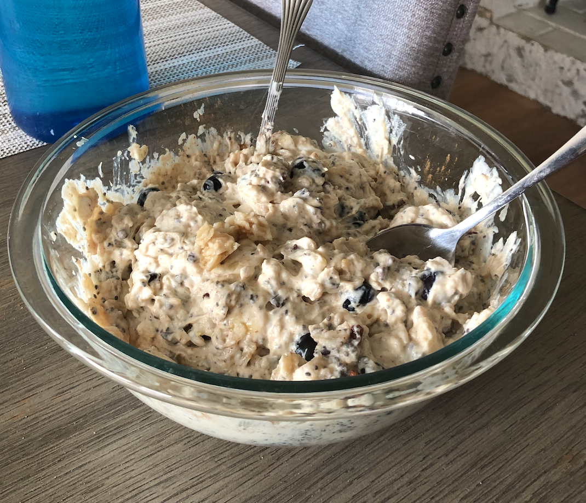

Action Packed Yogurt Protein Bowl

It is time to do this thing. I don't think you are even ready for the amount of carbs in this dish
Ingredientes
- 950 grams of Fage yogurt
- 4 cups of whole grain, rolled oats
- Organic pasta de mani, sin azucar
- Chia seeds, flax seeds, cocoa nibs, hemp seeds, and pumpkin seeds
- Blueberries, one banana, and blackberries
- Coconut oil (1 table spoon)
Instruciones
- 4 cups of water, preferably high quality water. If it ain't, that's fine, hopefully the bad shit will get filtered out during the boiling
- Bring the water to a boil in a big pot with a sprinkle of Himalayan Pink Sea Salt if you're boujee. Add oats, reduce the heat to low, and cap with a lid.
- Stir often and keep an eye on them. The starch forms a foam that cannot be stopped once it rises, so you may have to alternate the heat or bat it down with a spoon. Seriously, otherwise, your stovetop will get destroyed and the hardened starch is a bear to remove
- While the oatmeal does its thing, get the rest of your ingredientes out and locked and loaded
- Add 300-400 grams of yogurt to a large bowl, or half of the container. Add three tablespoons of mani de pasta, and the remainder of the ingredientes, EXCEPT the coconut oil.
- Add oatmeal to the bowl when it's ready, straining out all of the water. Add a table spoon of coconut oil to the hot oatmeal on top, before thoroughly mixing the bowl for roughly one minutes
- Garnish with cinnamon and enjoy!
You better be hungry. Definitely add enough chia seeds to balance out the carb load. It can be a lot if it's your first time